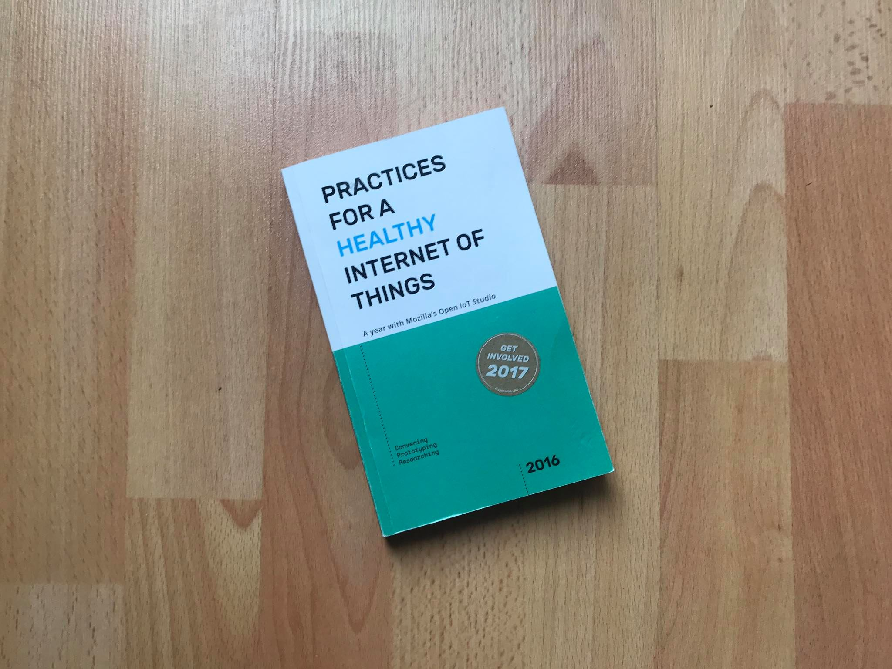
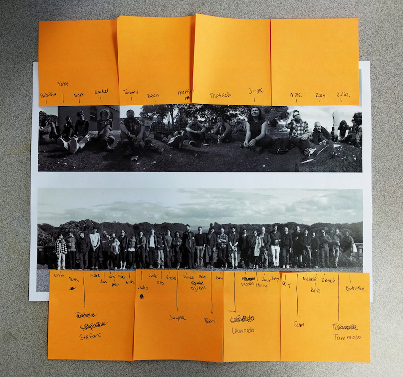
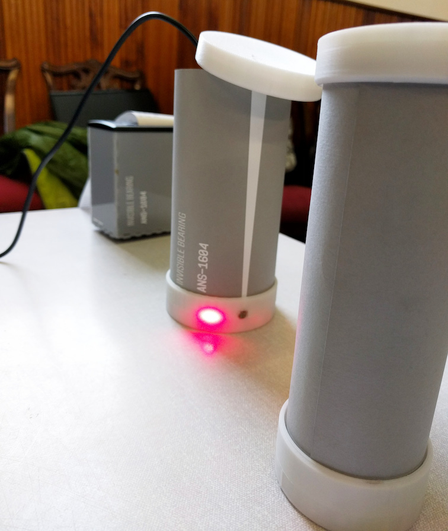
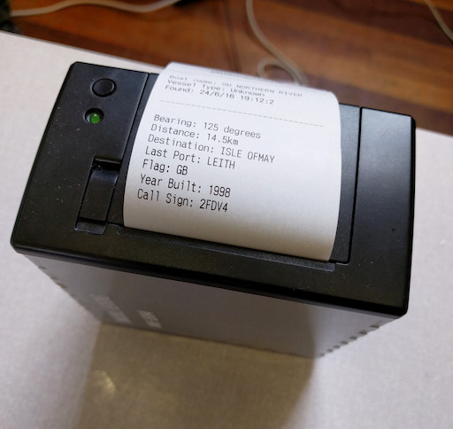

exploration | research | concept
Straight from the Wiki - “ Exploring the Internet of Things In an open, distributed studio that cares about privacy, inclusion and literacy in connected spaces. “
Mozilla gave me the opportunity to exercise my love of making and the internet by inviting me to Anstruther, Scotland for a week of contextual exploration.
The goal of the week was to question the internet and what it means for small communities like Anstruther. How can we use the technology to enhance lives and create meaning. For the week, I teamed up with Ali Napier & Martin Skelligan (University of Dundee) and Stefano Paradiso & Tomasso Laterza (Arduino).
We explored the idea of using connected things to create an experience in an educational environment. In this case the local fishing museum.
We gathered insights from some of the staff of the museum regarding shipping ports and the old tradition of guessing which boats we can see in our sights.
Naturally this inspired thought into how we can bring the internet into use, to enhance and create a new experience for the small village. The result was Invisible Bearing.
Inspired by technology created to realise my Octavius project, the concept began to take shape.
We aimed to keep the essence of the original story of looking out at the port to find ships in the distance. We considered different interactions with pointing devices and shapes before settling on ‘handles’ or poles. Not dissimilar to shapes and objects found on shipping docks and boat ports.
Once two of the ‘handles’ were aligned in the direction of a boat - we correlated this data with information available on the internet to print out a keepsake token of which boat you’ve found.
A personal and unique experience for the fishing museum.
Further details of Mozilla and the Open IOT studio can be found here. Details of this project can also be found in ‘The Open IoT Studio’ library - Practices For a Healthy Internet of Things.